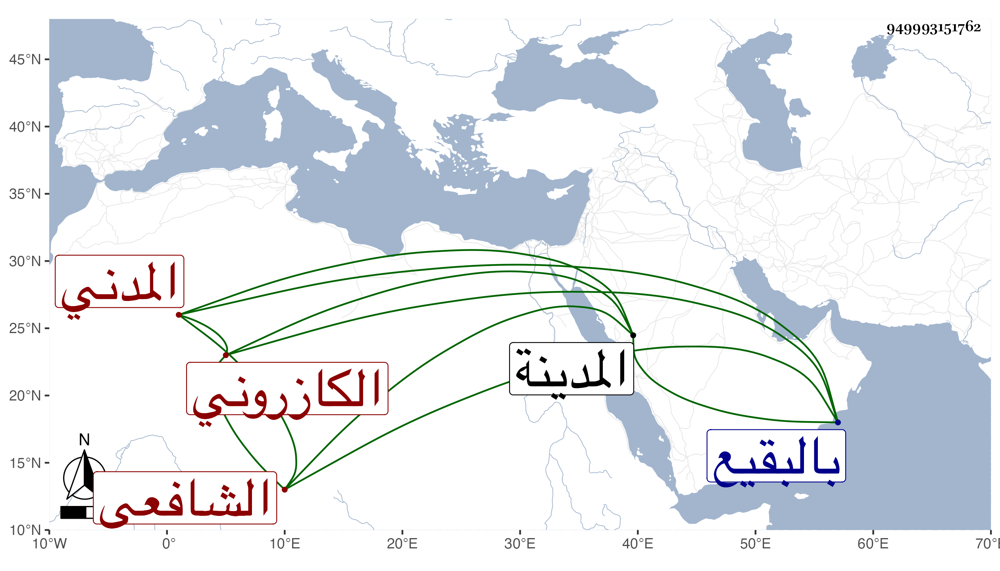

0902Sakhawi.DawLamic.ITO20230111-ara1.EIS1600.949993151762
Biography ID: 949993151762
557
محمد بن محمد بن محمد بن عبد السلام بن محمد بن روزبة الشمس بن فتح الدين أبي الفتح بن التقي الكازروني المدني الشافعي والد أحمد الماضي وكذا أبوه ويعرف كهو بابن تقي وربما يقال له تقي . ولد في تاسع عشرى ربيع الآخر سنة خمس وثلاثين وثمانمائة بالمدينة النبوية ونشأ بها فحفظ القرآن والحاوي والمنهاج الأصلي وألفية ابن ملك وعرض واشتغل على أبيه وغيره وسمع على أبي الفتح المراغي والجمال الكازروني . بل قرأ على أبي الفرج المراغي وسمع مني قليلا وأجاز له شيخنا وجماعة وكان خيرا ذا همة علية وتودد وامتهان لنفسه مع أحبابه . مات في يوم الثلاثاء ثالث عشرى ربيع الآخر سنة تسع وثمانين وصلي عليه في عصره ودفن بالبقيع رحمه الله وإيانا .
